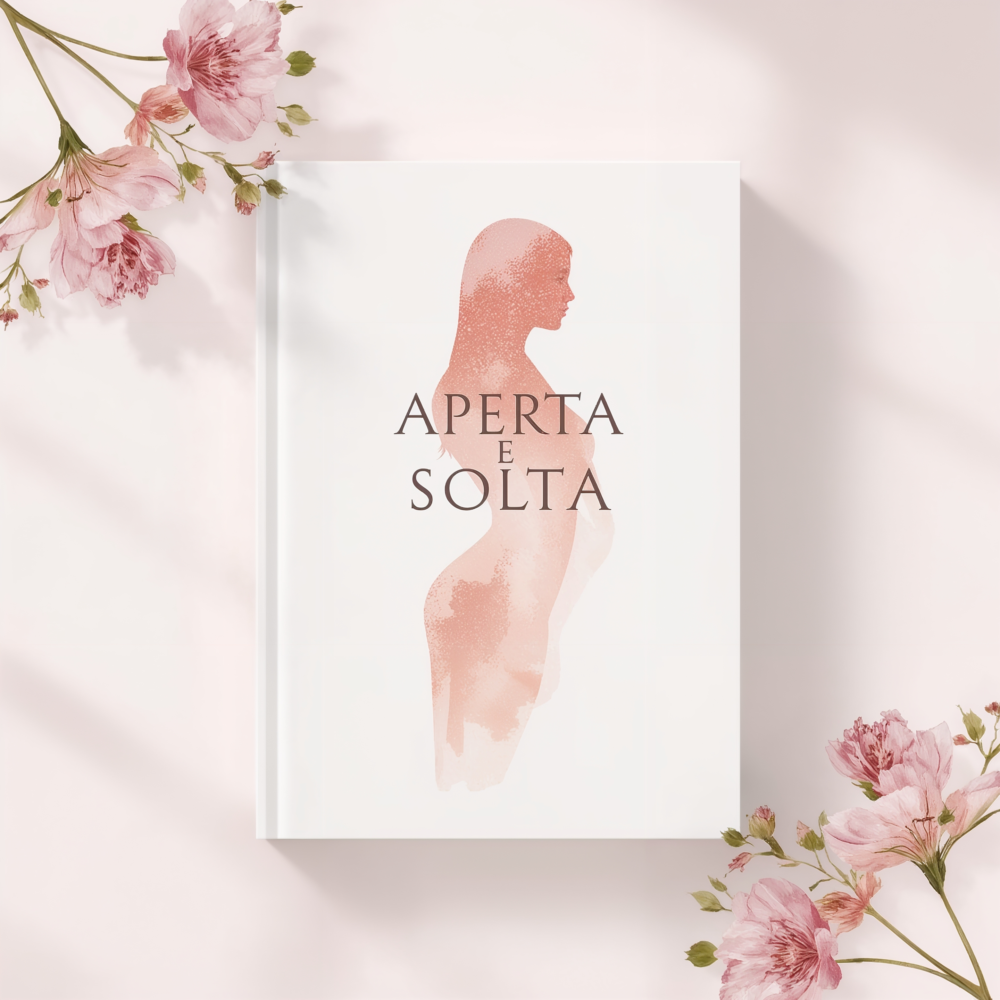

O que você vai aprender:
- Exercícios práticos para fortalecimento muscular íntimo
- Técnicas para aumentar o prazer e a sensibilidade
- Dicas para melhorar a autoestima e confiança
- Orientações para saúde íntima feminina
"Este e-book mudou minha vida! As técnicas são fáceis e os resultados incríveis." - Juliana M.
Transforme seu Poder Feminino
Imagine sentir-se mais confiante, com prazer elevado e uma conexão profunda com seu corpo. Nosso e-book traz ensinamentos comprovados, para você dominar as técnicas do pompoarismo com segurança e facilidade, seja iniciante ou já experiente.
Invista em você, melhore sua saúde íntima e surpreenda-se com os resultados que vão transformar sua vida pessoal e sexual.
Descubra mais benefícios
Descubra o poder do pompoarismo e transforme sua vida íntima. Com técnicas simples e eficazes, você
fortalece sua musculatura vaginal, aumenta o prazer e eleva sua autoestima. Experimente uma conexão
profunda consigo mesma e com seu parceiro(a).
O pompoarismo vai além do prazer — é saúde, autoconhecimento e bem-estar. Nosso eBook te guia passo a
passo para conquistar maior controle, sensibilidade e vitalidade íntima. Comece hoje e sinta a diferença
no seu corpo e nas suas relações.
Liberte sua sensualidade com o pompoarismo, uma prática milenar que traz benefícios físicos e
emocionais. Aprenda técnicas comprovadas que aumentam seu prazer e ajudam no combate à flacidez.
Potencialize sua energia feminina e surpreenda-se com os resultados.